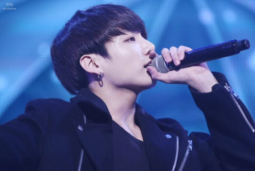
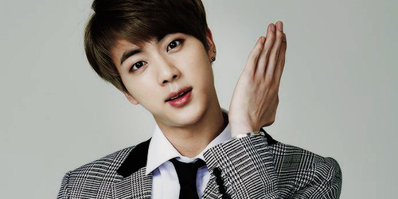
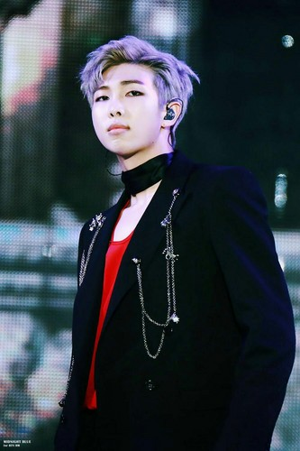
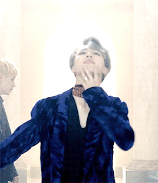
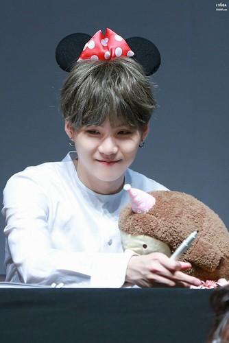

Jungkook, the youngest member, is often noted as the most talented. He can sing (really well), dance (amazingly), eat, and play video games like nobody's business. His charms have earned attention from Western stars such as Charlie Puth with his cover of Charlie's song, "We Don't Talk Anymore". He's practically perfect so there's not much more to say other than that he is my third favorite member.
Named the most handsome face of 2017 on the TC Candler Annual Independent Critics List, V catches attention wherever he goes. On their trip to America for the BBMAs, V's looks caught the eyes of many non-K-pop fans. V is also a singer in the group, but is interested in all aspects of the arts, especially fashion. V is known as the most fashionable of the group and for good reason.

Jin, the oldest member of the group was surprisingly not added to the group for his vocal abilities, but for his looks. Jin was nicknamed "Worldwide Handsome" by himself and was even recognized for it at a Korean awards show. He is a great cook and takes care of the other members also earning the nickname "Mamma Jin" for his caring and love of the color pink. He and RM are also known for not being the best dancers.
Birthname Kim Namjoon stagename RM (formerly RapMonster). RM is the leader of BTS and is fluent in English thanks to his mom's gift of the complete Friends series! RM is a rapper in the group, produces, and has done one singing cover with another member, Jungkook. His solo mixtape, "RM" was released in 2015.
Jimin, my favorite member, is the multi-talented singer/dancer phenomena that took Korea by surprise. Trained as a classical dancer, Jimin quickly switched to interpretive dance and now uses his style to create some of BTS' most iconic dances such as the dance in the beginning of "Save Me".His angellic vocals and flexibility have earned him solo dance stages and spots judging singing competetions in Korea. He opened the previous BTS album up with his single, "Serendipity".
Yoongi, my second favorite member, is the second oldest and often most mature of the group. Yoongi is a rapper in the group and has produced myriad songs for the group and for other artists. He, like RM and Jin, was once a pretty bad dancer, but they have all improved since their debut in 2013. Yoongi is known for his deep voice and is listed as the second fastest rapper in Korea. His mixtape, "Agust D" came out in 2016 under their company, BigHit.
J-Hope, the last member is known as the sunshine of the group. His smile and contagious laughter make everyone happy, despite their hardships. J-Hope's mixtape, "Hope World" was released on March 2nd of this year and attracted attention from a suprising Western star, John Cena. Yes, it's true, a wrestler from America likes BTS and his bias (favorite member) is in fact J-Hope. J-Hope's energy and great dance skills makes him the lead of the "dance line" (the members that are best known for their dance skills) and he is also a member of "rap line" a.k.a the rappers of the group.